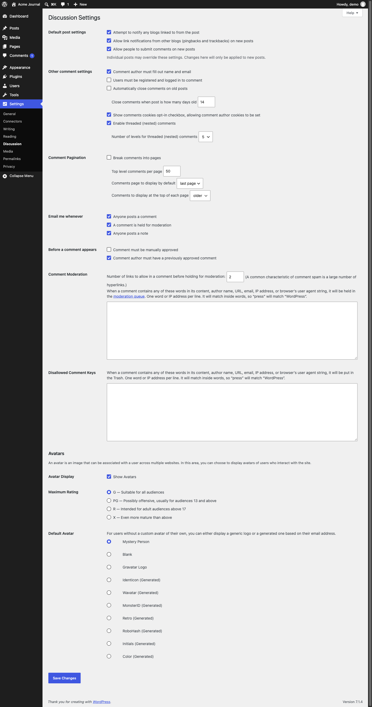

Screen spec · p029
Discussion Settings
All site-wide rules for comments: whether new posts accept comments and link notifications, who may comment, threading and pagination, email notifications, moderation rules and word lists, and how avatars are shown.

View 1 capture →Spec items
| ID | Type | Spec | Condition | Evidence | Confidence | Notes |
|---|---|---|---|---|---|---|
SPEC-p029-01 | Display | All three boxes under "Default post settings" are ticked, including "Allow people to submit comments on new posts". | On this demo site | init | Verified | |
SPEC-p029-02 | Business rule | Individual posts may override the default post settings, and changes apply only to new posts. | Always | init | Inferred | Stated in the note under the checkboxes; not tested |
SPEC-p029-03 | Display | Under "Other comment settings", "Comment author must fill out name and email", the cookies opt-in checkbox and "Enable threaded (nested) comments" are ticked, with 5 levels of nesting. | On this demo site | init | Verified | |
SPEC-p029-04 | Display | "Users must be registered and logged in to comment" and "Automatically close comments on old posts" are unticked, and the day count beside the latter reads 14. | On this demo site | init | Verified | |
SPEC-p029-05 | Display | "Break comments into pages" is unticked, with 50 top level comments per page, "last page" displayed by default and "older" comments at the top. | On this demo site | init | Verified | |
SPEC-p029-06 | Display | All three "Email me whenever" boxes are ticked: "Anyone posts a comment", "A comment is held for moderation" and "Anyone posts a note". | On this demo site | init | Verified | |
SPEC-p029-07 | Display | Under "Before a comment appears", "Comment must be manually approved" is unticked and "Comment author must have a previously approved comment" is ticked. | On this demo site | init | Verified | |
SPEC-p029-08 | Input | "Comment Moderation" holds a link limit of 2 and an empty word list, and "Disallowed Comment Keys" holds a second empty word list. | On this demo site | init | Verified | The help text says matches go to the moderation queue and to the Trash respectively |
SPEC-p029-09 | Display | Under "Avatars", "Show Avatars" is ticked, "Maximum Rating" is "G — Suitable for all audiences" and "Default Avatar" is "Mystery Person". | On this demo site | init | Verified |
About this screen
Purpose
Sets the moderation policy for reader comments in one place, balancing openness against spam, and decides which comment events email the administrator.
Shown when
Shown to a logged-in user who can manage site options (the capture was taken as the user "demo"); other roles were not captured, so they probably do not see the Settings menu.
Who uses it and how
The administrator or the person responsible for community moderation sets this at launch and returns when spam increases or the comment policy changes. Reached from the "Settings" submenu in the side menu; the sibling settings screens are p025 General Settings, p026 Connectors, p027 Writing Settings, p028 Reading Settings, p029 Discussion Settings, p030 Media Settings, p031 Permalink Settings and p032 Privacy Settings.
Main features
- Default comment and link-notification settings for new posts
- Commenter requirements (name and email, login)
- Automatic closing of comments on old posts
- Threaded comments with a chosen depth
- Comment pagination and ordering
- Email notifications for comments, moderation and notes
- Approval rules before a comment appears
- Moderation by link count and word lists
- Avatar display, rating limit and default avatar
UI elements and behavior
| Element | Behavior | Notes |
|---|---|---|
| Checkbox groups ("Default post settings", "Other comment settings", "Email me whenever", "Before a comment appears") | Each box switches one rule on or off. | |
| Number field "Close comments when post is how many days old" | Sets the age limit used when automatic closing is on. | Holds 14 while the rule is off |
| Select "Number of levels for threaded (nested) comments" | Offers 2 to 10; 5 selected. | |
| Text areas under "Comment Moderation" and "Disallowed Comment Keys" | One word or IP address per line; both empty. | The help text warns that matching also works inside words |
| Radio group "Default Avatar" | Ten choices from "Mystery Person" to "Color (Generated)". | No preview images are visible beside the options in the capture |
| Link "moderation queue" | Probably opens the list of comments awaiting moderation. | Not clicked |
| "Save Changes" button | Probably saves the whole form. | Not pressed during the crawl |
Input fields
| Field | Type | Required | Assumed validation | Notes |
|---|---|---|---|---|
| Attempt to notify any blogs linked to from the post | checkbox | No | None | Ticked |
| Allow link notifications from other blogs (pingbacks and trackbacks) on new posts | checkbox | No | None | Ticked |
| Allow people to submit comments on new posts | checkbox | No | None | Ticked |
| Comment author must fill out name and email | checkbox | No | None | Ticked |
| Users must be registered and logged in to comment | checkbox | No | None | Unticked |
| Automatically close comments on old posts / Close comments when post is how many days old | checkbox + number | No | Probably a whole number of days | Unticked; 14 |
| Show comments cookies opt-in checkbox, allowing comment author cookies to be set | checkbox | No | None | Ticked |
| Enable threaded (nested) comments / Number of levels for threaded (nested) comments | checkbox + select | No | 2 to 10 | Ticked; 5 |
| Break comments into pages / Top level comments per page | checkbox + number | No | Probably a whole number of 1 or more | Unticked; 50 |
| Comments page to display by default | select | No | "last page" or "first page" | "last page" |
| Comments to display at the top of each page | select | No | "older" or "newer" | "older" |
| Email me whenever ("Anyone posts a comment", "A comment is held for moderation", "Anyone posts a note") | checkboxes | No | None | All ticked |
| Comment must be manually approved | checkbox | No | None | Unticked |
| Comment author must have a previously approved comment | checkbox | No | None | Ticked |
| Number of links to allow in a comment before holding for moderation | number | No | Probably a whole number of 0 or more | 2 |
| Comment Moderation (word list) | textarea | No | One word or IP address per line | Empty |
| Disallowed Comment Keys | textarea | No | One word or IP address per line | Empty |
| Show Avatars | checkbox | No | None | Ticked |
| Maximum Rating | radio | No | G, PG, R or X | G selected |
| Default Avatar | radio | No | One of ten options | "Mystery Person" selected |
Usage flow
- Open "Settings" → "Discussion".
- Decide whether new posts accept comments and who may comment.
- Set the approval rule and, if needed, add words to the moderation or disallowed lists.
- Choose which events send an email and how avatars are shown.
- Press "Save Changes".
Navigation
| Trigger | Goes to | Notes |
|---|---|---|
| Side menu "Reading" | p028 Reading Settings | Target taken from the link address in the crawl record; the link was not clicked |
| Side menu "Media" | p030 Media Settings | Target taken from the link address in the crawl record; the link was not clicked |
Variants and business rules
States and variants
Only the saved state was captured; the screen is long and was captured in one image. The notice after saving and any dependent enabling or disabling of the indented sub-fields were not observed.
Business rules and constraints
With the captured settings, a first-time commenter's comment is held until approved, and later comments from the same author appear without approval. A comment with more than the allowed number of links, or containing a listed word, is held for moderation; one containing a disallowed word goes straight to the Trash (as the help text states). The side menu shows 1 comment in moderation on this site.
Open questions
- Who receives the "Email me whenever" messages: the administration address, the post author, or both?
- What is a "note" in "Anyone posts a note", and where are notes written?
- Are the indented sub-fields ignored or disabled while their parent checkbox is unticked?
- Do changes to moderation rules affect comments already waiting?
Auto-extracted data (headings, links, buttons, tables, click decisions)
Headings
- H1: Discussion Settings
- H2: Avatars
Tables
| Caption | Headers | Rows |
|---|---|---|
| Default post settings | 7 | |
| Avatar Display | 3 |
Internal links
| Text | URL | Notes |
|---|---|---|
| Skip to main content | http://localhost:8899/wp-admin/options-discussion.php#wpbody-content | |
| Skip to toolbar | http://localhost:8899/wp-admin/options-discussion.php#wp-toolbar | |
| Dashboard | http://localhost:8899/wp-admin/index.php | |
| Home | http://localhost:8899/wp-admin/index.php | |
| Updates | http://localhost:8899/wp-admin/update-core.php | |
| Posts | http://localhost:8899/wp-admin/edit.php | |
| All Posts | http://localhost:8899/wp-admin/edit.php | |
| Add Post | http://localhost:8899/wp-admin/post-new.php | Excluded pattern: post-new\.php |
| Categories | http://localhost:8899/wp-admin/edit-tags.php?taxonomy=category | |
| Tags | http://localhost:8899/wp-admin/edit-tags.php?taxonomy=post_tag | |
| Media | http://localhost:8899/wp-admin/upload.php | |
| Library | http://localhost:8899/wp-admin/upload.php | |
| Add Media File | http://localhost:8899/wp-admin/media-new.php | |
| Pages | http://localhost:8899/wp-admin/edit.php?post_type=page | |
| All Pages | http://localhost:8899/wp-admin/edit.php?post_type=page | |
| Add Page | http://localhost:8899/wp-admin/post-new.php?post_type=page | Excluded pattern: post-new\.php |
| Comments 1 1 Comment in moderation | http://localhost:8899/wp-admin/edit-comments.php | |
| Appearance | http://localhost:8899/wp-admin/themes.php | |
| Themes | http://localhost:8899/wp-admin/themes.php | |
| Editor | http://localhost:8899/wp-admin/site-editor.php | |
| Fonts | http://localhost:8899/wp-admin/font-library.php | |
| Plugins | http://localhost:8899/wp-admin/plugins.php | |
| Installed Plugins | http://localhost:8899/wp-admin/plugins.php | |
| Add Plugin | http://localhost:8899/wp-admin/plugin-install.php | |
| Users | http://localhost:8899/wp-admin/users.php | |
| All Users | http://localhost:8899/wp-admin/users.php | |
| Add User | http://localhost:8899/wp-admin/user-new.php | |
| Profile | http://localhost:8899/wp-admin/profile.php | |
| Tools | http://localhost:8899/wp-admin/tools.php | |
| Available Tools | http://localhost:8899/wp-admin/tools.php | |
| Import | http://localhost:8899/wp-admin/import.php | |
| Export | http://localhost:8899/wp-admin/export.php | |
| Site Health 2 | http://localhost:8899/wp-admin/site-health.php | |
| Export Personal Data | http://localhost:8899/wp-admin/export-personal-data.php | Risky URL keyword: export |
| Erase Personal Data | http://localhost:8899/wp-admin/erase-personal-data.php | |
| Theme File Editor | http://localhost:8899/wp-admin/theme-editor.php | |
| Plugin File Editor | http://localhost:8899/wp-admin/plugin-editor.php | |
| Settings | http://localhost:8899/wp-admin/options-general.php | |
| General | http://localhost:8899/wp-admin/options-general.php | |
| Connectors | http://localhost:8899/wp-admin/options-connectors.php | |
| Writing | http://localhost:8899/wp-admin/options-writing.php | |
| Reading | http://localhost:8899/wp-admin/options-reading.php | |
| Discussion | http://localhost:8899/wp-admin/options-discussion.php | |
| Media | http://localhost:8899/wp-admin/options-media.php | |
| Permalinks | http://localhost:8899/wp-admin/options-permalink.php | |
| Privacy | http://localhost:8899/wp-admin/options-privacy.php | |
| Menu | http://localhost:8899/wp-admin/options-discussion.php# | |
| About WordPress | http://localhost:8899/wp-admin/about.php | |
| About WordPress | http://localhost:8899/wp-admin/about.php | |
| Get Involved | http://localhost:8899/wp-admin/contribute.php | |
| ⌘K Open command palette | http://localhost:8899/wp-admin/options-discussion.php# | |
| 1 1 Comment in moderation | http://localhost:8899/wp-admin/edit-comments.php | |
| New | http://localhost:8899/wp-admin/post-new.php | Excluded pattern: post-new\.php |
| Post | http://localhost:8899/wp-admin/post-new.php | Excluded pattern: post-new\.php |
| Media | http://localhost:8899/wp-admin/media-new.php | |
| Page | http://localhost:8899/wp-admin/post-new.php?post_type=page | Excluded pattern: post-new\.php |
| User | http://localhost:8899/wp-admin/user-new.php | |
| Howdy, demo | http://localhost:8899/wp-admin/profile.php | |
| demoEdit Profile | http://localhost:8899/wp-admin/profile.php | |
| Overview | http://localhost:8899/wp-admin/options-discussion.php#tab-panel-overview | |
| moderation queue | http://localhost:8899/wp-admin/edit-comments.php?comment_status=moderated |
External links
| Text | URL |
|---|---|
| WordPress.org | https://wordpress.org/ |
| Documentation | https://wordpress.org/documentation/ |
| Learn WordPress | https://learn.wordpress.org/ |
| Support | https://wordpress.org/support/forums/ |
| Feedback | https://wordpress.org/support/forum/requests-and-feedback |
| Acme Journal | http://localhost:8899/ |
| Visit Site | http://localhost:8899/ |
| Log Out | http://localhost:8899/wp-login.php?action=logout&_wpnonce=3c75f1926c |
| Documentation on Discussion Settings | https://wordpress.org/documentation/article/settings-discussion-screen/ |
| Support forums | https://wordpress.org/support/forums/ |
| WordPress | https://wordpress.org/ |
| Please log in again. | http://localhost:8899/wp-login.php |
Safety decision for clickable elements
| Element | Type | Decision | Reason | Selector |
|---|---|---|---|---|
| Skip to main content | a | Skip | Not clicked (pages are opened by URL) | |
| Skip to toolbar | a | Skip | Not clicked (pages are opened by URL) | |
| Collapse Menu | button | Skip | Not clicked (pages are opened by URL) | |
| ⌘K Open command palette | menuitem | Skip | Not clicked (pages are opened by URL) | |
| Help | button | Skip | Not clicked (pages are opened by URL) | |
| Save Changes | input | Skip | Blocked keyword: save |
Body text (start)
Skip to main content Skip to toolbar Dashboard Home Updates Posts All Posts Add Post Categories Tags Media Library Add Media File Pages All Pages Add Page Comments 1 1 Comment in moderation Appearance Themes Editor Fonts Plugins Installed Plugins Add Plugin Users All Users Add User Profile Tools Available Tools Import Export Site Health 2 Export Personal Data Erase Personal Data Theme File Editor Plugin File Editor Settings General Connectors Writing Reading Discussion Media Permalinks Privacy Collapse Menu About WordPress Acme Journal ⌘K Open command palette 1 1 Comment in moderation New Howdy, demo Help Discussion Settings Default post settings Default post settings Attempt to notify any blogs linked to from the post Allow link notifications from other blogs (pingbacks and trackbacks) on new posts Allow people to submit comments on new posts Individual posts may override these settings. Changes here will only be applied to new posts. Other comment settings Other comment settings Comment author must fill out name and email Users must be registered and logged in to comment Automatically close comments on old posts Close comments when post is how many days old Show comments cookies opt-in checkbox, allowing comment author cookies to be set Enable threaded (nested) comments Number of levels for threaded (nested) comments 2 3 4 5 6 7 8 9 10 Comment Pagination Comment Pagination Break comments into pages Top level comments per page Comments page to display by default last page fi